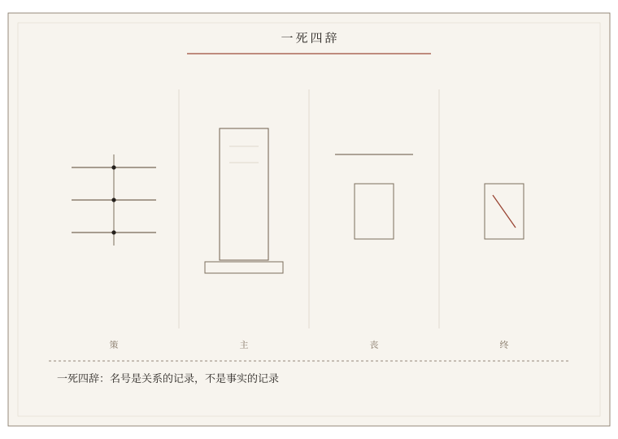

曲礼下 · 二·四十二 · 第 165 课
遣使赴告，称「天王登假」；葬后立主于庙，称「帝」；天子未除丧称「予小子」；生称小子，死亦称小子。注「登，上也。假，已也。上已者，若仙去云耳」。
说什么事：一死四辞：赴告之辞、立主之号、居丧之自称、生死同称。
落在哪一层：礼，兼及礼意。论同一人之死的四种叫法及其分寸。
为何编在此位：上节论崩与复，此节续论赴、主、丧称。一节之内，辞之四变。
【经】告喪，曰「天王登假」。措之廟，立之主曰「帝」。天子未除喪，曰「予小子」。生名之，死亦名之。
【注】告，赴也。登，上也。假，已也。上已者，若仙去云耳。同之天神，《春秋傳》曰：「凡君，卒哭而祔，祔而作主。」謙，未敢稱一人。《春秋傳》曰：「以諸侯之逾年即位，亦知天子之逾年即位。以天子三年然後稱王，亦知諸侯於其封內三年稱子。」生名之曰小子王，死亦曰小子王也。晉有小子侯，是僣取於天子號也。
【疏】此谓天王崩而遣使告天下万国之辞也。登，上也。假，已也。言天子上升已矣，若仙去然也。而史策书云「天王崩」，复曰「天子复」，赴云「天王登假」，三称不同者，为义然也。「措之庙，立之主」者，措，置也。王葬后，卒哭竟而祔，置于庙，立主，使神依之也。《白虎通》云：「所以有主者，神无依据，孝子以继心也。主用木，木有始终，又与人相似也。」盖记之为题，欲令后可知也。方尺，或曰尺二寸。「曰帝」者，天神曰帝，今号此主，同于天神，故题称帝，云文帝武帝之类也。崔灵恩云：「古者帝王生死同称……记者录以为法也。」「天子未除丧，曰予小子」者，夫適嗣于初丧，但人子当未忍即受天王之称，故不曰「予一人」，而称「予小子」者，言我德狭小也。「生名之，死亦名之」者，嗣王既呼为小子，若于丧中而死，亦谥为小子王，丧质，故不变称也。
登假 注「登，上也。假，已也」。上已，谓上升而止。
措 注「置也」。疏「王葬后，卒哭竟而祔，置于庙」。
主 木主。疏「主用木，木有始终，又与人相似」。
帝 注「同之天神」。主之题称。
予小子 注「谦，未敢称一人」。
生名之，死亦名之 生称小子王，死于丧中亦谥小子王。
遣使告丧，说「天王登假」。葬后置主于庙，题称「帝」。天子未除丧，自称「予小子」。居丧时称小子，丧中而死亦称小子。
同一位天子，死后的名号竟有四种：对天下说「登假」，对庙说「帝」，对自己说「予小子」，对史册说「小子王」。此节把四种辞并列，让人看见：名号不是事实的记录，是关系的记录。
第一层 登假之义 注「上已者，若仙去云耳」。不说死，说升而止。赴告之辞要轻，因为是给天下听的。
第二层 立主之制 疏记其详：葬后卒哭而祔，置主于庙，使神依之。主用木，「木有始终，又与人相似」。以有始终之物象无始终者，是礼的通法。
第三层 称帝之故 注「同之天神」。天神曰帝，故主亦称帝。疏引崔灵恩谓古者生死同称。此中有一层危险：人主之称与天神同，礼的边界在此最薄。
第四层 予小子与不变称 未除丧不敢称「予一人」，只称「予小子」。若竟死于丧中，谥亦为「小子王」，丧质，故不变。礼在一个人最后的时刻，仍不许他把名分提前。
与今日何干 一个人死后怎么写、怎么称，从来不是小事。名号里有他与世界的关系。
| 左 | 右 |
|---|---|
| 告丧曰天王登假 | 赴告天下，若仙去 |
| 措之庙，立之主曰帝 | 主同天神，故题帝 |
| 天子未除丧曰予小子 | 谦，未敢称一人 |
| 生名之，死亦名之 | 丧质，不变称 |
| 三称不同 | 崩、复、登假，各有所用 |
| 主用木 | 木有始终，与人相似 |
画四格横排，各置一物：第一格一束札片（三道横木以绳穿起，示策书）；第二格一块竖立的木牌，牌面空白、下有一道方座；第三格一枚低垂的小方牌，牌上方画一条横线（示未除丧的压顶）；第四格与前格同形而牌上一道斜划（示丧中不改称）。四格之间以细竖线分隔，四物同高。不写文字、不画人。赭色只用在第二格木牌的方座上。
